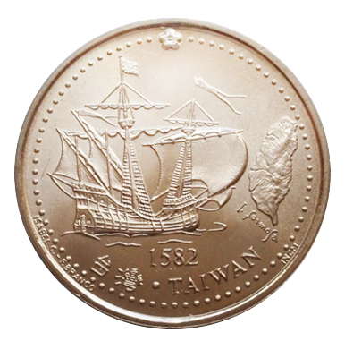

原住民
主題導覽
凱達格蘭族
根據日本人類學家伊能嘉矩的研究，北台灣的原住民凱達格蘭族(Ketagalan)於兩千年前渡海而來在Caquiuanuan附近的深澳(澳底)港上岸。 語言學家李壬癸認為凱達格蘭族來台後分化成巴賽(Basay，或稱馬賽人)與雷朗幾個亞族。(註1)巴賽人在400年前抵達淡水河、大台北地區，即雞籠和板橋的一些地區，形成了一個大巴賽體系，宜蘭則有多羅美遠巴賽人(Trobiawan Basay)定居。
「凱達格蘭族」一詞是伊能嘉矩在1897年首度提出的，由於在西班牙與荷蘭統治時代所有文獻全未提及「凱達格蘭族」或「凱達格蘭語」， 當時只有提到共通的語言是「巴賽語」，所以「凱達格蘭」可能是「日本的發明」。(註2)既然如此，稱「基隆」的地名是來自「凱達格蘭」後面兩個音轉化的說法 就是子虛烏有了。比較合理的是根據早期漳泉商人對「雞籠」的閩南語發音，由西班牙人在1597年的海圖就已經標記Keilang為雞籠、「淡水」為Tamchuy，可資證明。(註3)
根據鮑曉鷗的《西班牙人的台灣體驗 1626-1642，一項文藝復興時代的志業及其巴洛克的結局》書中對於巴賽人的文化特徵舉出六點如下
(1)擁有共通的語言
(2)村莊都是孤立的海岸聚落
(3)村落間存在著親屬關係
(4)所建立的貿易網絡不僅藉海陸連結巴賽村落，也使巴賽得與其他的民族有所往來
(5)這不僅是貿易網路，也是交流溝通的網路
(6)沒有馘首習俗。(註4)
在淡水的巴賽人可能與十三行文化有密切的關係，根據劉益昌的研究，十三行的文化發展於二千至一千八百年前之間，其後逐步由淡水河口沿著海岸向東、向南發展。向東分布到北海岸，再轉向南方的宜蘭平原、奇萊平原北半部，從淡水向南則沿西海岸影響到桃園台地至大肚台地之間的海岸地帶。(註5)根據十三行的出土文物也看得出該地居民擅長貿易，這於巴賽族的個性與分布狀況十分吻合。
但雞籠的巴賽人與淡水的巴賽人仍有基本的不同。譬如雞籠人不耕種，只擔任工匠，淡水人則有耕種。(註6) 其中對於巴賽人的商業能力特別作了強調， 尤其是在西班牙人與漢人、原住民之間的穿梭，譬如生產器物遠赴葛瑪蘭(蘭陽平原)或哆羅滿(花蓮立霧溪)與原住民換取稻米、黃金與鹿皮， 再將它們賣給西班牙人換取白銀，再用白銀向大陸人購買絲製品與陶瓷。這就是「島際貿易」。(註7)
但是這並不代表它們具有「貨幣經濟」的概念，只是因為中國人需要銀而把它當成交易工具。雖然有「島際貿易」可是卻沒有市場導向，沒有積蓄概念， 換取足夠米糧就停止工作，基本上還是自給自足之外的多餘利用，所以基隆與淡水確實有貿易的傳統，卻不足以讓他們發展成為較大的港市，兩地在十六、七世紀的崛起是來自於外部世界，而不是其本身發展的結果。(註8)
本圖表現正在狩獵梅花鹿的台灣北部原住民與海上出現的西方帆船，雖然到目前為止雙方沒還有接觸，但很快的西方人就會下船登岸，梅花鹿皮將變成重要的出口商品， 原住民也將被迫捲入世界的海商貿易體系之中。
(註1)陳宗仁，《雞籠山與淡水洋，東亞海域與台灣早期史研究》(台北：聯經出版社，2005)，頁34。
(註2)鮑曉鷗(Jose Eugenio Borao)著，Nakao Eki（那瓜）翻譯《西班牙人的台灣體驗 1626-1642，一項文藝復興時代的志業及其巴洛克的結局》(台北；南天書局，2008)， 頁94-95。
(註3)陳宗仁，《雞籠山與淡水洋，東亞海域與台灣早期史研究》，頁147。
(註4)鮑曉鷗，《西班牙人的台灣體驗1626-1642，一項文藝復興時代的志業及其巴洛克的結局》，頁128。
(註5)陳宗仁，《雞籠山與淡水洋，東亞海域與台灣早期史研究》，頁33-34。
(註6)陳宗仁，《雞籠山與淡水洋，東亞海域與台灣早期史研究》，頁67-68。
(註7)陳宗仁，《雞籠山與淡水洋，東亞海域與台灣早期史研究》，頁38-39。
(註8)陳宗仁，《雞籠山與淡水洋，東亞海域與台灣早期史研究》，頁40-45。
(圖說) 島內獵梅花鹿的台灣原住民，海平線上出現的西方大帆船表示這個寧靜而封閉的環境即將被外力介入而引起天翻地覆的改變。
巴賽人的航海
根據西方人紀載，台灣北部的原住民巴賽族人體高膚白，歐洲人稱為「北福爾摩莎的白色魔鬼海盜」，善於操舟航行，是台灣本島原住民中唯一的海洋民族。 巴賽人有語言天分並懂得計算，所以是很好的商人，在西方人來到之前就已經在北台灣與各原住民部落及漢人交易，(註1)八里十三行遺跡就與此有關。
巴賽人的語言分布很廣，包括淡水、台北盆地甚至蘭陽平原各部族雖然都有自己的語言，卻都能操巴賽語溝通，雖然這不表示他們都有血緣關係， 但至少表示巴賽人的貿易足跡影響了這些地方。
巴賽人善於航海，那麼他們的船長甚麼樣子呢? 據研究巴賽族來自海上，可能與南島民族(Austronesian peoples)同源，而其語言稱船為”Banka”(艋舺)更可證明。 在有些南島民族的語言中”Banka”指的是邊架艇，也就是在舟的兩旁延伸架上有浮筒以增加平衡，有雙邊的也有單邊的，更大型的就成為雙體船的型式。 邊架艇到了狹窄的內河就取下邊架只留本體，也就是我們在台灣看到原住民小舟。但台灣到目前為止沒有發現邊架艇的遺物，不過對巴賽族的遠航能力確是有記載， 包括能承載25、6人的「海蟒甲」，邊架艇是唯一的解釋。(註2)
由於巴賽人能夠循海路到蛤仔難(今宜蘭)甚至哆囉滿(今花蓮)去做生意，不大可能是划獨木舟去的，我們有理由相信當年巴賽族是使用與南島民族一樣有 雙叉「蟹型帆」的邊架艇去東部，這就是這幅「巴賽人在雞籠外海搶劫戎克船」插畫的根據。
這一支迥異於其他族群個性的巴賽人多年來經過與他族主要是漢人的通婚，現在已經完全漢化而難以分辨，尤其具有特色的海洋文化已經完全不見， 甚至當年的船隻都沒有任何文物遺址可以考察。目前在基隆地區較為明顯的原住民阿美族反而是50年代自台東被招募來基隆充當漁工的移民， 根據其來源地稱做「阿拉寶灣」，並非真正雞籠的「原住民」，其漁工身份對於研究基隆的海洋文化亦關係不大。
(註1) 翁佳音，《近世初期北部台灣的貿易與原住民》，收入黃富山、翁佳音主編的《近世初期北部台灣的貿易與原住民》(台北：中央研究院台灣史研究所籌備處，1999)頁140。
(註2) 陸傳傑、曾樹銘，《航向台灣》(台北：遠足文化公司，2013)，頁14-15，27-28。
(圖說) 巴賽人駕駛艋舺在雞籠外海搶劫漢人的戎克船。
巴賽人的聚落
Quimaurri就是巴賽人在雞籠島上的聚落，根據西班牙人調查當時有600人，分居於4-5個部落，(註1) 主要位置在雞籠島的東端。
巴賽人的建築可能接近南島民族的干欄屋形式，再加上巴賽族人對於航海及船的運用，可能會類似沙巴的傳統建築部份高架於水上(如圖)， 但目前都無具體出土遺址證明，僅為推測。根據國立台北藝術大學文化資源學院、建築與古蹟保存研究所張譽耀之碩士論文「從大雞籠社、 聖薩爾瓦多城到社寮島」之研究指稱：
依現有之資料看來,就型制之變遷而言,由於資料不足尚無法判斷其變遷。建築類型方面則推測至少應有居住及交通等二種類型。 形式方面整體巴塞族之建築形式應是以木造矮干闌式建築為主,但若考略及本研究空間範圍之氣候以及其面海之地理形勢等因素, 是否大雞籠社之主要建築形式,亦是如此的是以木造矮干闌式建築為主?則尚有待進一步的史料發現,目前尚無法判斷。(註2)
居住在Quimaurri的巴賽人在西班牙人到來後很快就學會西班牙語與接受天主教，成為極佳的通譯人才與得力助手。 不過善於算計與交易的巴賽人在荷蘭人入侵時卻保持中立，等待投靠新的贏家，充份展露商人特點。 道明會修士艾基水(Esquivel Jacinto)就曾評價Quimaurri的住民無農業，製作工藝品販賣，並往來其它村落幫忙蓋房子，會打劫商船，有海?之名， 個性很狡猾，沒有其他部落那樣老實與善良品性。(註3)
巴賽(或馬賽)在台灣做為地名至今尚存，蘇澳港旁邊的村落名「馬賽」，而且其原始居民真的跟北部巴賽人有關。根據《噶瑪蘭志》的記載： 馬賽莊乃當日淡水流番之所居，而民人近亦耕種於其地焉。
(註1) 陸傳傑、曾樹銘，《航向台灣》，頁66-74。
(註2) 張譽耀，《從大雞籠社、聖薩爾瓦多城到社寮島》，頁2-15。
(註3) 陳宗仁，《雞籠山與淡水洋，東亞海域與台灣早期史研究》，頁38。
(圖說) 巴賽人在雞籠島上的聚落，據研究其建築為高架於水上的干欄屋型式。
大航海時代
主題導覽
大航海時代
「大航海時代」又稱「地理大發現時代」(Age of Discovery)，指從15到17世紀歐洲國家的船隊在世界各處尋找著新的貿易路線、資源和市場。所謂「大發現」只是從歐洲的角度而言，事實上那些地方本來就存在，甚至有比當時歐洲還要昌盛的文明，而且遠在「大航海時代」之前透過陸地的絲路歐亞貿易就已十分發達，但因中間被新興的奧圖曼土耳其帝國阻攔，成本與風險大增，讓歐洲國家興起另尋到達亞洲直接航路的想法，在地圓說成熟與帆船航海技術進步後這成為可能。
「大航海時代」最初由葡萄牙開始，之後西班牙加入競爭，最後雙方協議葡萄牙專往非洲發展，這導致西班牙朝向大西洋更遠方探索，重要結果之一是哥倫布(Christopher Columbus)在1492年「發現」了美洲新大陸。哥倫布是熱那亞人(今屬義大利)，由西班牙女王伊莎貝拉支助完成航行，伊莎貝拉這項投資的報酬顯然極為豐厚，新大陸大量的黃金與白銀被運回西班牙讓這個伊比利半島上剛從摩爾人手中解放的窮困小國突然一躍變成歐洲第一強國。 由於「大航海時代」一開始就是以貿易為導向，所以經濟目的十分明顯，能夠形成一個長期維持的運作模式，不像只為政治目的的鄭和下西洋，沒有經濟收入支持很容易隨人亡而政息。
哥倫布一直以為自己到達的地方是印度，北美原住民被稱為印地安人(Indian)由此而來。後來另一個義大利學者亞美利哥(Amerigo Vespucci)實地調查測量聲稱這是一個新大陸，結果後世就以其名來命名為「亞美利加」。哥倫布晚年時可能已經發現自己是錯的，但仍堅稱自己抵達的是印度而不願承認錯誤。 班牙在獲得美洲殖民地與大量的白銀後，跨越太平洋到遠東與中國貿易就成為必然，因為這才是哥倫布航海本來的目的。與葡萄牙﹑荷蘭﹑英國繞過好望角由西往東走不一樣，西班牙是從美洲往西來到遠東的，首先他取得呂宋(菲律賓)做為基地，然後在與荷蘭的競爭中才想到要佔領北台灣，這就讓雞籠被捲入大航海時代的國際網絡之中。
(圖說) 圖左領先的是哥倫布的旗艦”Santa Maria”號，圖右跟隨的是”La Pinta”號，圖中遠方的是”La Nina”號。
Ilha Formosa
葡萄牙人在十六世紀就經常往來澳門與日本長崎之間，船隻必定經過台灣海峽，也知道利用北方島嶼定位，甚至還有1544年葡萄牙船隻途經台灣海峽，葡人所雇用之荷蘭籍航海官林氏侯登 (Linschotten)看到蒼鬱的島嶼稱其為「美麗之島」(Ilha Formosa)的說法，(註1)但是葡萄牙人卻從來沒有想過要登陸或佔領台灣。
由於沒有登岸實際了解測繪，當時葡萄牙(包括荷蘭人)所繪製的海圖都將台灣誤認為是三個分離的島，因為他們從海上看大安溪、濁水溪寬廣的出海口很容易誤認為分隔各島的海峽(如圖)，但西班牙人由於是從台灣東岸乘著黑潮航行，所以他們所繪製的海圖就不會有三個島的誤解。
以西班牙艾爾南度的羅留上校 (Hernando De Los Rios) 於1597年6月27日呈給西班牙國王的海圖為例就正確表示出台灣是一個完整的島嶼，海圖稱台灣為Hermosa，在島的北部註明雞籠、淡水二港，他並曾建議國王佔領雞籠，(註2)雖然如此，一開始西班牙人也沒有登陸台灣的打算。
為什麼這些西方人明明知道有台灣島卻不登島探勘，甚至佔領呢? 最初葡萄牙人來遠東是為了中國與日本的貿易，獲得澳門為據點足矣，台灣只是部分商品的來源而不是市場，所以沒有占領的必要。後來荷蘭人則是為了截斷西班牙到日本的貿易航路而佔領大員，之後西班牙也是為了同樣的原因佔領雞籠，不同的是荷蘭人在台灣南部發展殖民農業，西班牙人在北部純粹只是貿易據點而沒有發展農業，這是西班牙人無法持久的原因。
(註1) 唐羽著，《台灣採金七百年》(台北：財團法人台北市錦綿助學基金會，1985)，頁13。
(註2) 周婉窈，《海洋與殖民地台灣論集》(台北：聯經出版社，2012)，第一章 山在瑤波碧浪中，頁47。
(圖說) 葡萄牙船隻通過台灣海峽看到被大河分割的陸地誤以為台灣是三個島。
西方人第一次
登陸台灣
眾所周知西班牙人在1626年正式佔領雞籠，但是早在44年前西班牙人就曾登陸過台灣。這得由耶穌會神父桑切斯(Alonso Sanchez)的傳奇說起。1580年西班牙與葡萄牙合併，1582年1月菲律賓總督派遣桑切斯神父由馬尼拉前往澳門通知澳門當局這個消息。1582年7月完成任務的桑切斯神父搭上一艘預定開往日本長崎的船離開。這是一艘葡萄牙人擁有的中式帆船(Junk)，船主是托羅米巴也斯(Bartolome Baez)，船長是安德烈費憂(Andres Feiyo)，搭載許多貨物與乘客(包括中國人、日本人、菲律賓人、黑奴、歐洲人，以及4名神父與一名修士總共達300餘人)。
船隻開航後不久就遇上颱風，幾經周折最後在7月16日於台灣海峽擱淺，所有人逃離上岸。在落難期間具有宗教熱忱的傳教士們在島上豎起了台灣第一個十字架，並且在高地的森林中搭建了台灣第一座天主堂，天天進行彌撒宗教儀式，也曾經與原住民發生第一次接觸與衝突。
最後他們利用沉船廢棄的材料重新建造了一艘較小的帆船，讓大部份的人在9月30日脫困回到澳門，只損失了13人，從傳教士的角度這可謂神蹟。本圖所示為他們放棄了教堂與十字架，拖著自己搭建的帆船等待大潮來臨出海。
桑切斯神父直到1582年才回到馬尼拉，並且在書信中留下事件的始末。其他傳教士哥枚斯神父(Pedro Gomez) 與法蘭西斯伯列斯修士(Francisco Pirez)也對此事件留下了文字紀載，讓西方人對當時被稱做「小琉球」的台灣首次有機會看到親身經歷的描述。雖然文中並未指出登陸地點，但因為桑切斯神父是駐在馬尼拉的西班牙人，聽過當地華人對於台灣的敘述，所以可以確定是台灣只是不知是台灣的什麼地方。(註1)
為他們所留下的紀錄提供了艾爾南度的羅留上校 (Hernando De Los Rios) 1592年繪製地圖的情報，並說服西班牙國王佔領雞籠。葡萄牙政府在1996年發行了面額200Escudos (200盾)的銅幣紀念此事，背面有帆船圖案(西式帆船但原來應為中式)、台灣地圖下有「I · formosa」的小字，以及「1582 台灣 . TAIWAN」的大字。
(註1) 周婉窈，〈1582年美麗島船難餘生記〉，《艾爾摩莎-大航海時代的台灣與西班牙特展》(台北；國立台灣博物館，2006)，頁25-38 。對於登陸的精確地點，西班牙學者鮑曉鷗(Jose Eugenio Borao)認為是北部，翁佳音認為應該是淡水河右岸， 作者則認為可能是彰化海邊，不過都是推論，尚未有直接證據證明。

(圖說1) 西方人第一次登陸台灣起於1582年葡萄牙船隻的一場海難。
(圖說2) 葡萄牙政府在1996年發行紀念本事件的200盾(Escudos)銅幣。
後發先至的荷蘭人
荷蘭原來是西班牙的屬地，30年戰爭獨立後開始效法葡萄牙與西班牙來遠東尋求貿易機會。由於在爭取獨立過程中與西班牙的仇恨，荷蘭人在海外也專門找西班牙的麻煩。荷蘭人擅長航海，外號「海上馬車伕」，加上荷蘭東印度公司的制度優越﹑資金雄厚，很快就後來居上。
當時無論是荷蘭人﹑西班牙人或英國人都很羨慕葡萄牙擁有澳門，因為澳門等於是在中國境內，貿易距離最近﹑成本最低，也最為方便。但葡萄牙人在澳門是歷史上的偶然，這個機會不可能再有，覬覦不成只有訴諸武力。
荷蘭艦隊於1601年至1627年間先後5次攻打澳門，其中以1622年6月24日發生的戰役最為重要，雖然荷蘭人這一次與英國人聯手但最後損失慘重而退卻，一艘軍艦沉沒、136人陣亡，是澳門有史以來最大的戰役，荷蘭人攻打澳門未果才轉往澎湖。
1622年荷蘭人占領了澎湖在風櫃建立城堡，封鎖了所有華人包括閩南海商李旦開往呂宋貿易的船隻，由於明朝的壓力，李旦順勢慫恿荷蘭人去占領當時明朝視為化外之地的台灣。有一說李旦基於私利(不願讓荷蘭人染指北台灣的硫磺資源)，力陳雞籠、淡水之不適於停泊而推薦大員，否則荷蘭人可能就會佔有台灣的北部而非南部。(註1)
不過這種說法缺乏證據，反而荷蘭人選擇大員應該是經過長期觀察，1623年3月荷蘭就派出商務員亞當‧裴互德(Adam Verhull)去雞籠與淡水勘查，他的結論認為當地住民非常凶殘，而且雞籠港難避東北季風，所以最後荷蘭人選擇了大員建立熱蘭遮城，這個決定讓馬尼拉大為緊張，才計畫佔領北台灣以突破荷蘭人的封鎖。
(註1) 駱芬美，《被誤解的台灣史》(台北：時報文化出版公司，2014)，頁31。
(圖說) 1622年荷蘭艦隊圍攻澳門。
的羅留上校的海圖
在艾爾南度的羅留上校 (Hernando De Los Rios) 於1597年6月27日呈給西班牙國王腓利二世(Felipe II de Espana)的海圖與說明中首次出現「雞籠」(Keilang)的地名，在他的說明中敘述：
福爾摩沙有一些港口，但有一個港口位於此島的頂端，面像日本，非常合適、堅固，被稱為雞籠，目前此港並無防禦工事，如駐守三百士兵和建一堡壘，此區域的各股勢力將無法攻擊。有一條很窄的水道，可用砲火防禦，不受風的侵擾，是個大港口，船隻隨時可以停泊。港口的東北方有一個住著約三百人的島擋著。 …..在福爾摩沙島的雞籠港，國王您派來的軍隊在此會很安全且受到良好的供養，因為此地肥沃，可供應米、肉和魚，魚多到每年可以裝滿兩百艘到中國。他們主要來自很近的中國海岸，在那裏大量的魚是用來交換錢幣，在日本也有銀供應。 (註1)
的羅留上校對於雞籠的描述從今天來看還是很準確的，「有一條很窄的水道，可用砲火防禦，不受風的侵擾」可能是八尺門水道，「港口的東北方有一個住著約三百人的島擋著」顯然就是和平島。不過的羅留本人並沒有來過台灣，對於雞籠如此精確地描述可能來自於曾到過島上的馬尼拉華人所轉述，因為標記在地圖上的Keilang、Tamchuy顯然是根據閩南人的拼音而來，也有可能1597年之前就有西班牙人來雞籠港探勘過。(註2)
早在1565 年來往美洲墨西哥與亞洲呂宋的「馬尼拉-阿卡普爾科(Acapulco，在今墨西哥)」航線就已經通過台灣東岸， 1582年7月Francisco Gualle船長通過台灣海峽前往琉球的航海紀錄也都記載了台灣，加上桑切斯神父的船難也正好發生在1582年7月，這些西班牙人的紀錄對的羅留上校的海圖一定都產生了相當的影響。
本圖表現的羅留上校以其繪製的海圖向西班牙國王腓利二世介紹台灣，這幅海圖大約只有42公分見方，但讓雞籠與淡水在那個時候就登上全球海權爭霸的舞台。
腓利二世是好大喜功而且具有宗教狂熱的國王，曾先後兼任英格蘭、愛爾蘭、西班牙、葡萄牙、西西里與那不勒斯的國王，以強硬手段統治尼德蘭低地國，美洲與非洲的殖民地，並在歐洲大肆進行宗教審判。他在位期間把西班牙的國勢推向頂峰，但也因過度虛耗國力讓西班牙開始走下坡。1588年無敵艦隊大敗，1598年亦即在看過的羅留地圖的第二年去世。也就是說當西班牙人在1626年佔領雞籠時，西班牙帝國已經過了頂峰期走向衰弱了。
(註1) 陳宗仁，《雞籠山與淡水洋，東亞海域與台灣早期史研究》，頁144。
(註2) 陳宗仁，《雞籠山與淡水洋，東亞海域與台灣早期史研究》，頁147。
(圖說1) 艾爾南度的羅留上校繪台灣地圖呈獻給西班牙國王腓利二世。
(圖說2) 艾爾南度的羅留上校繪製的台灣地圖上首度出現雞籠與淡水的地名。 資料來源：西印度群島綜合檔案館，Mapa de las Islas Filipinas Y Hermosa y parte de la Costa de China, 1597. Archivo General de Indias (AGI), MP Filipinas 6。 這幅艾爾南度的羅留上校於1597年繪製的海圖雖然形狀與比例有點失真，但這的確是第一張以經緯線畫出台灣的現代地圖。它以台灣為中心標示出琉球王國、大陸福建與廣東海岸、菲律賓等位置。當時的羅留上校稱台灣為Hermosa，雖然傳說葡萄牙水手喊過”I Lha Formosa!” ，但並沒有確切的證據是指台灣。把Hermosa用於稱呼台灣最早的是西班牙人。
漢人與日本人
主題導覽
番漢貿易
在十三行的遺址挖掘出漢朝的五銖錢與唐代及宋代的通寶以及陶瓷碎片，考古學者臧振華推測這表示「唐代及宋代的漢人可能航行至此入港上岸與當地的住民交易」。 (註1)
有漢唐宋的古錢出土，與大陸來往甚至交易的歷史可以確認，但不宜把通寶當成是採購貿易商品的貨幣，因為如前述原住民並不具有「貨幣經濟」的概念，通寶的角色更有可能類似當時漢人使用的其他交易工具譬如發光的玻璃珠子。事實上許多原住民婦女將通寶銅錢用絲線串起來當頭飾，又如蘭嶼達悟人將西班牙銀幣敲成銀箔做頭盔，這些都不是貨幣的概念。
西班牙傳教士艾基水(Jacinto Esquivel)曾經說西班牙人用白銀向原住民購買魚、獵物、木料、鹽等用品，中國商人卻使用「小東西」(chucheria)來交換原住民的黃金、硫磺、藤、獸皮等高價值商品。西班牙人還要教導原住民了解白銀的重要性，並希望讓銀介入原住民與漢人的交易中，原住民之所以配合並非他們真的了解銀的價值而是因為漢人需要銀，原住民用西班牙人付的銀幣去向漢人可以換得到貨品，所以仍然是以貨易貨的概念。(註2)
當時已經是17世紀了，台灣北部的原住民都還不瞭解通寶或銀幣是貴金屬，我們能想像唐宋時代的十三行住民了解通寶是貨幣，可以用來支付交易貨品的價格嗎?
所以當時來自大陸的漢人拿一些「賤惡什物」(明朝李廷機所稱)來向雞籠巴賽人換黃金也就可以想像了。不過巴賽人也不是自己生產這些物品，他們是拿漢人的粗布、鐵鍋等去向淡水或是蘭陽平原、花東縱谷的其他原住民部落交換而來，這就是巴賽人扮演的商業貿易角色與所謂的「島際貿易」。(註3) 在整個交易中漢人的利益顯然最高，這就吸引了福建沿海的漢人來此地進行交易，十三行的漢代五銖錢與唐宋通寶大概就是這麼來的。
所以在西班牙人到來之前，漢人就已經是雞籠的常客，主要是被稱做「生理人」的福建貿易商人，他們在此地建有臨時住宅，但直到1630年左右才形成「小澗內」的聚落。
(註1) 陳宗仁，《雞籠山與淡水洋，東亞海域與台灣早期史研究》，頁35。
(註2) 陳宗仁，《雞籠山與淡水洋，東亞海域與台灣早期史研究》，頁39-40。
(註3) 陳宗仁，《雞籠山與淡水洋，東亞海域與台灣早期史研究》，頁41-42。
(圖說1) 漢人的戎克船從福建駛來八尺門停泊，巴賽人划艋舺來船邊進行交易。
冊封使船與北方三島
台灣原稱「琉球」，因為明初(1404年)中國冊封?氏王朝的「琉球王國」為藩屬國，所以台灣被改稱為「小琉球」。(註1) 當時由福州出發的琉球冊封使船隻通過台灣海峽往北進發時需要有海面上已知的島嶼做為導航定位的依據，所以在當時官方的航海記載中就註明了雞籠北方的花瓶嶼、彭佳嶼等小島做為定位點，最早在1534年冊封使陳侃的書中就提到小琉球。本圖就是表現這個歷史場景。
這張圖的船隻是根據清康熙58年（1719年）出使琉球的徐葆光在其著作「中山傳信錄」所附的「封舟圖」所繪。那麼為什麼由福州出發的貢使船不直接開往沖繩卻要往南繞經台灣雞籠的北部海域呢？徐葆光曾經在該書中寫道：
琉球在海中，本與浙閩地勢東西相值，但其中平衍無山，船行海中全以山為準，福州往琉球出五虎門必取雞籠、彭家等山，諸山皆偏在南，故夏至乘西南風，參用辰、巽等鍼繞南行，以見折而正東。…雖彼此地勢東西相值，不能純用卯、酉鍼徑直相往來者，皆以山為準，且行船必貴占上風故也。 (註2)
由此可知以當時的航海技術仍必須以沿岸或島嶼為地標來定位，並不具備後來西方人能夠跨越大洋的航海技術。不過他也強調如此周折也是考慮風向的問題，並不是完全沒有效益。
(註1) 湯錦台著，《閩南人的海上世紀》(台北：果實出版社，2008)，頁208-209。
(註2) 徐葆光，《中山傳信錄》(文叢第292種，1972)，頁24。引自陳宗仁著，《雞籠山與淡水洋，東亞海域與台灣早期史研究》(台北：聯經出版社，2005)，頁56。
(圖說) 琉球冊封使船以雞籠北方三島為航行定位的目標。
大明政府的態度
明代自1549年開始海禁到1683年解除，在此期間非正式的貿易方式造成倭寇的興起。1553年海盜王直(汪直)率200艘船進犯江浙，與俞大猷及戚繼光在1553年發生普陀山之戰及1555年發生台州之戰，王直敗退，部份倭寇逃往台灣，使得台灣成為海盜的聚集地。1557年葡萄牙獲得澳門為據點，同時協助明朝控制了倭寇的行動，這讓明朝在1568年部份解除禁令，開月港(海澄縣)為私人貿易的口岸，同時其他西方商人包括西班牙與荷蘭人也在此時開始現身。 (註1)
在這樣的環境下1570年雞籠與淡水成為明朝官方認可的貿易地點，1590年規定每年可以有10艘船到雞籠與淡水交易，但事實上當地的土產品並不足以支撐10艘船所需的貨物量，這些中國船極有可能是來此與來往呂宋之間的日本商船進行交易。(註2) 在這種以台灣為境外交易中心的狀況下，讓鄭芝龍的閩南海商集團應運而起。
我們應注意一點，明朝指定雞籠與淡水為官方認可的貿易地點並不表示朝廷認為那是國內，正好相反那兒被認為是國外，因為明朝管的只是中國船隻的數量與它們被允許去的地點，至於有多少艘日本船或西方船去台灣交易是管不著的，因為那兒不被認為是大明王國的疆域。
有一個著名的例子可以證明。1622年荷蘭艦隊第五次攻打澳門失利，移師占領澎湖在風櫃建立城堡，當時明軍逼迫荷蘭人拆毀城堡離開，並主動建議轉移到台灣大員，因為那兒是明朝疆界之外。這件事情表示在朝廷眼中澎湖與台灣是不同的身份地位。
雖然雞籠不是大明王國的疆域，但中國官員卻覺得可以在那兒行使統治權及徵稅，這就很奇怪了。由於中國傳統是「朝貢外交」政治，所以我們很難用近代歐洲「民族國家」(Nation state) 的概念來解釋。朝貢外交是建立在文化認同而非血緣或疆界，任何人只要被視為天朝子民，不管他們身在何處都在皇權之下，可以說是「屬人主義」而非「屬地主義」。
以下舉幾個真實的例子。1603年5月23日，3名穿著華麗官服的明朝官員包括福建礦稅監宦官高寀(一說高寀指派的一名太監)、海澄縣丞王時和與百戶幹一成率隨從50人浩浩蕩蕩來到西班牙人統治的馬尼拉面見總督，聲稱奉皇帝之命要調查甲米地出產金銀的某座山，根據西班牙人的資料，在會面時王時和畏縮不多言，主導者反而是宦官高寀。
他們逗留在馬尼拉的期間穿著官服乘轎在前呼後擁下招搖過市，甚至在華人社區開庭審理司法業務，引起西班牙高等法院的不快，更引起總督的猜忌，以為中國人要來攻打，這些人是先遣部隊，於是開始對華人社區監視防範，雙方的不信任造成數個月後的大規模屠殺事件。(註3) 在事件中有25,000名華人被殺，剩下的200名倖存者全都被送上槳帆船當搖櫓手，其中有一個原來在馬尼拉就是頭人的富商名叫李旦。1606年6月由於中國政府的過問，這些華人在日本被釋放，李旦落腳平戶，從此開啟了海商兼海盜的傳奇。(註4) 李旦是說服荷蘭人放棄澎湖佔領大員的關鍵性人物，他為這件事派出的通譯聯絡官就是鄭芝龍，鄭芝龍在李旦死後承接了他的船隊與地盤，創造閩南海商集團勢力的高峰，這些也是鄭成功征台的發家資本。
其次是關於宦官高寀，他的「礦稅監」職務值得一說。明代因朝鮮戰爭財政入不敷出，萬曆皇帝派遣親信宦官到各地名義上是開採銀礦及在各交易要衝徵收商業稅，但實際上這些宦官都集中在大都市，並不是因為都市產銀，而是他可以任意指定富豪之家說房子地下有銀礦要拆毀人家房屋，屋主只好送上大筆賄賂以保住家園，宦官甚至率領一批無賴搶劫商民形同盜匪。其中派在臨清的宦官馬堂就因為欺壓太過在1599年引發當地民變，被弭平後馬堂依然穩坐原位，次年6月馬堂又搶劫了路過的義大利傳教士利瑪竇帶往北京晉見皇帝的珍稀獻禮，利瑪竇向北京友人訴苦，友人卻回覆要他「捨財保命，因為如今皇上只聽宦官之言」。
礦稅監宦官劫掠地方不僅是中飽私囊，事實上整個事件都是因為要應付萬曆皇帝的奢華開銷而起，包括修建定陵龐大工程的開支。這場宦官引發的掠奪史稱「礦稅之禍」，(註5) 高寀的福建礦稅監就是因此產生的職務，所以會跑到馬尼拉勘查金山也可算是「礦稅監」的業務範圍。
在明代福建方志「閩書」 (註6)中可以查到更多關於高寀的記載：
(萬曆)四十二年，稅監高寀抑勒市價，市民火稅監門。寀策馬配刀植入督御史府，執都御史袁一驥於市，欲劫之。事聞，撤寀還京。(註7)
關於這件事在「閩書」的另一卷關於袁一驥的敘述可以看到更多記載：
袁一驥，江陰人，萬曆進士，先為左轄，稅吏高寀不戢，力制之矣。及建節，捕治其爪牙，治之法。會粵璫死，神廟使寀兼粵稅。寀徵集百貨，將入粵與諸商市。其所徵貨，又不與市直，已有三山之鬧。語在鎮守太監中。寀直來窘一驥，一驥聲色俱厲。會諸公至，以大義責寀，而一驥歸署，及走足聞，天子召寀歸，使一驥復撫閩。一驥竟歸。閩頌撤璫之功，建祠焉。 (註7)
對於明代太監的跋扈，閩書可說寫得十分傳神，不過在書中卻找不到海澄縣令王時和與百戶幹一成的資料，但這份出訪馬尼拉的名單是根據明史323卷的記載，應有可信度。(文中的「嶷」就是甲米地金山案的始作俑者張嶷)：
…..而迫於朝命，乃遣海澄丞王時和、百戶幹一成偕嶷往勘。呂宋人聞之大駭…..
1627年又有一批中國官員來到已被西班牙人佔領的雞籠，記載提到有部份之前曾去過馬尼拉，但根據閩書高寀在萬曆42年(1614年)被撤職回京，所以在1627年派員來雞籠的就不太可能是高寀，而王時和已在1617年去世，也不可能來雞籠。來者可能是一位千總或把總，來剛被西班牙人佔領的雞籠一探虛實。(註8)
1632年福州的官員更指責聖薩爾瓦多城有舢舨走私，威脅要派中國官員去收稅。(註9)顯然明朝官員根本不把西班牙的統治權放在眼裡，認為華人即使到了海外還是大明帝國的子民。這種心態延續到今天的表徵就是「華僑」政策。
一直到1683年施琅大敗明鄭並說服康熙皇帝將台灣納入福建管轄之前，台灣可說是中國的化外之地。當時康熙本來是要將所有漢人島民內遷，拋棄台灣回復成無主狀態的。即使到了清朝末年，台灣也有一半生番的領域不屬於官署統治的範圍，這是造成牡丹社事件日本以此為藉口出兵征台的主要原因。
清代大部份時間朝廷是重南輕北的，雞籠被視為邊陲的蠻荒之地，連地方官都沒有，直到1874年沈葆楨來台視察，發現雞籠因採煤業興盛，他在報告中寫到：
「洋樓客棧，闤闠喧囂…..通商之後竟成都會，且煤物方興，末技之民四集，海防既重，訟事尤煩，該處向未設官，役非佐雜微員所能鎮壓」
因此奏請設雞籠通判，並將「雞籠」改名「基隆」，取「基地昌隆」之意 。隨著基隆開港，輪船時代來臨，有深水港又有煤炭礦產優勢的基隆馬上成為台灣最重要的港口。
(註1) 鮑曉鷗，《西班牙人的台灣體驗 1626-1642，一項文藝復興時代的志業及其巴洛克的結局》，頁233-234。
(註2) 陳宗仁，《雞籠山與淡水洋，東亞海域與台灣早期史研究》，頁184。
(註3) 鮑曉鷗，《西班牙人的台灣體驗 1626-1642，一項文藝復興時代的志業及其巴洛克的結局》，頁273-275。
(註4) 陳國棟，〈馬尼拉大屠殺與李旦出走日本的一個推測（1603~1607）〉，收入《台灣文獻，第60卷，第3期》(台北市：國史館，2009)，頁42。
(註5) (日本)上田信著，葉韋利譯，《海與帝國，明清時代》(新北市：台灣商務印書館，2017)，頁268-271。原資料引自Regni Chinensis desccripito。
(註6) 明代何喬遠撰，自萬曆三十六年（1608年）開始至萬曆四十八年（1620年）成書，共154卷。
(註7) (明)何喬遠編撰《閩書》〈卷之一四八，詳異志，泉州府〉(福州，福建人民出版社，1995)，頁4390。
(註8) (明)何喬遠編撰《閩書》〈卷之四十五，文蒞志〉，頁1129-1130。
(註9) 陳宗仁，《雞籠山與淡水洋，東亞海域與台灣早期史研究》，頁229。1626-1642，一項文藝復興時代的志業及其巴洛克的結局》，頁273-275。
(註10) 陳宗仁，《雞籠山與淡水洋，東亞海域與台灣早期史研究》，頁194。
(註11) 台北擬建一府三縣摺頁第五十六。
(圖說) 明朝官員穿著官服前呼後擁來到雞籠巡視。
高砂國
1592年日本海?村上(Murakami)及小野(Kono)等人先後以雞籠港為基地，將搶奪而來的生絲、瓷器、香料集中於此再以合法商人的身份運回日本高價出售。1593年豐臣秀吉派遣部屬原田喜右衛門(原田孫七郎)攜帶諭令文書前往呂宋勸貢，在歸途經過台灣北部登岸(可能指北部雞籠一帶 )(註1) 賜示「高砂國」勸原住民部族入貢，但可能因原住民部落並非一個統一的國家政權，找不到適合談判的對象，最後無功而返。
接著在1604年日本海上冒險家山田長政在赴暹羅途中也曾登上台灣島，當時日本人在台灣哆囉滿從事採金並在雞籠與淡水友殖民地的雛形。(註2) 之後日人勘察台灣更是絡繹不絕，包括肥前國藩主有馬晴信也都在1609年來過台灣。
西班牙人對台灣產生興趣最早則是在1597年日本的豐臣秀吉威脅要馬尼拉向其納貢，為取得緩衝而議論派遣遠征隊前往台灣做為前哨，為此當時的西班牙製圖家的羅留繪製了一幅台灣最早的現代地圖，上面明確標出雞籠港(Puerto of Keilang)、淡水(Tamchuy)等地方，(註3) 還早於張?在1617年(明萬曆45年)所作的「東西洋考」中所提及的雞籠山與淡水洋。
西班牙人意圖在台灣設立據點一事因為豐臣秀吉不久死亡而作罷。接著荷蘭人興起，經常封鎖馬尼拉意圖阻撓菲律賓與中國的貿易線，因此設點之議再起，同時在宗教上也需要有一個據點利於偷渡傳教士進入禁教愈演愈烈的日本。(註4)
然而在西班牙人還沒動手之前，日本就搶先出兵了。
(註1) 周婉窈，〈山在瑤波碧浪中〉，《海洋與殖民地台灣論集》(台北；聯經出版社，2012)，頁38。
(註2) 唐羽著，《台灣採金七百年》，頁16。
(註3) 鮑曉鷗，《西班牙人的台灣體驗 1626-1642，一項文藝復興時代的志業及其巴洛克的結局》，頁8。
(註4) 鮑曉鷗，《西班牙人的台灣體驗 1626-1642，一項文藝復興時代的志業及其巴洛克的結局》，頁70-72。
(圖說) 1593年豐臣秀吉派使臣原田喜右衛門登陸台灣北部，勸「高砂國」原住民入貢。
村山艦隊攻打雞籠
1615年，長崎代官村山等安得到新崛起的將軍德川家康頒發「高砂國渡船朱印狀」，派遣次男村山秋安組織艦隊征台，但事為琉球國王尚寧知道，遣通事蔡廛通知明朝，福建巡撫黃承玄於是派沈有容為福建水師提督備戰。
村山等安的艦隊包括13艘船隻、3,000多人於1616年5月4日從長崎出發，卻在琉球遇到風暴，其中村山等安搭乘的三艘船漂流到交趾(今越南)，次年七月才回長崎。明石道友率領的三艘船抵達台灣北部，其中一艘登陸雞籠被原住民包圍，日兵一、兩百人全部陣亡，船長也被迫自殺，另兩艘漂流到閩北攻擊當地後回國。其餘七艘在琉球修理並曾在台灣的竹塹港停，後轉戰金門浙江沿海與明軍交戰，其中一艘被沈有容軍擊沉。 (註1)
村山艦隊征伐台灣的事蹟歷史文獻不是很清楚，如果知道村山等安信奉天主教(等安就是來自於其教名Antao)與長年與呂宋從事貿易的背景就能瞭解其征台的目的可能與後來西班牙人佔領雞籠如出一轍，但如果以倭寇的角度視之，就不容易看的清楚。村山等安在1619年因涉入長崎與大阪的爭執被滿門操斬。
山之後，繼任的長崎代官末次平藏仍然熱衷於海外貿易，經營朱印船於台灣、安南、暹羅，在大員熱蘭遮城鬧出綁架荷蘭長官的濱田彌兵衛就是他的朱印船長。日本的海外貿易活動要到1636年德川幕府鎖國才停止。
(註1) 湯錦台，《大航海時代的台灣》(台北：貓頭鷹出版社，2001)，頁66-67。
(圖說) 1616年長崎代官村山等安率領大批艦隊進攻台灣，因風被吹散，部份來到雞籠戰敗，船長切腹自殺。
日本人聚落
日本人很早就來到雞籠，有的是來往呂宋貿易的商船路過此地整補避風，並與福建來的商船交易，有些是倭寇浪人，1616年日本德川幕府初期獎勵海外移民，雞籠開始有日本人常態定居的聚落。同一年薩摩藩的敗兵也搭乘八幡船逃亡來到雞籠。比較特別的是當年因幕府宗教迫害而來雞籠避難的日本天主教徒。他們的聚落在八尺門水道的對岸，約有200多人，這兒有一間「聖約瑟堂」（St. Joseph）教堂。
日本人往東南亞移民在當時不是特例，呂宋最多時達到三千名，暹羅亦有一千五百名，其原因與來雞籠的都差不多即走投無路的浪人、天主教徒、貿易商人以及受雇於當地人或外國人的日本人。(註1)
這些日本人聚落後來應該已經與本地人同化，至於雞籠的琉球人聚落是1905年才因為發展漁業而來。圖中顯示八尺門的擺渡人要舉火通報聖三位一體島上的西班牙衛兵，獲得同意後才可以渡海登岸。
(註1) [日本]羽田正著、林詠純譯，《東印度公司與亞洲的海洋》(八旗文化事業公司，2018)，頁132-133。
(圖說) 日本人在雞籠的聚落。